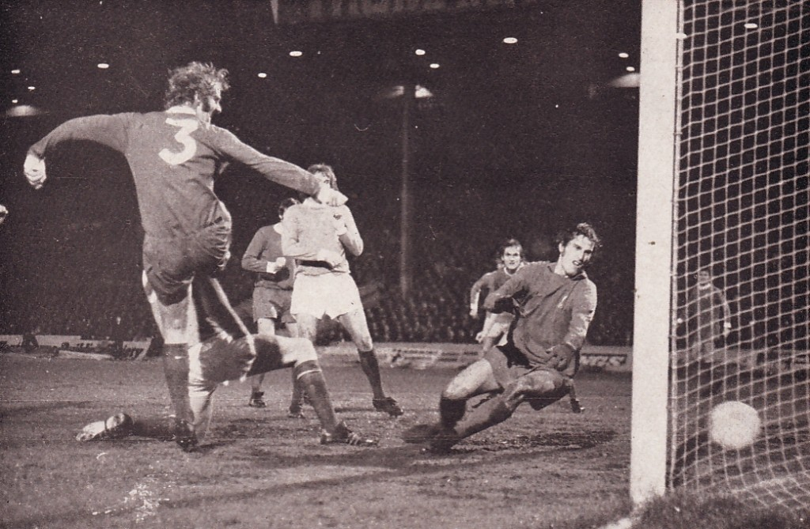

The first known examples of a team game involving a ball, which was made out of a rock, occurred in old Mesoamerican cultures for over 3,000 years ago. It was by the Aztecs called Tchatali, although various versions of the game were spread over large regions. In some ritual occasions, the ball would symbolize the sun and the captain of the losing team would be sacrificed to the gods. A unique feature of the Mesoamerican ball game versions was a bouncing ball made of rubber – no other early culture had access to rubber. The first known ball game which also involved kicking took place In China in the 3rd and 2nd century BC under the name cuju. Cuju was played with a round ball (stitched leather with fur or feathers inside) on an area of a square. A modified form of this game later spread to Japan and was by the name of kemari practiced under ceremonial forms. Perhaps even older cuju was Marn Gook, played by Aboriginal Australians and according to white emigrants in the 1800s a ball game primarily involving kicking. The ball was made by encased leaves or roots. The rules are mostly unknown, but as with many other early versions of the game keeping the ball in the air was probably a chief feature. Modern football originated in Britain in the 19th century. Since before medieval times, “folk football” games had been played in towns and villages according to local customs and with a minimum of rules. Industrialization and urbanization, which reduced the amount of leisure time and space available to the working class, combined with a history of legal prohibitions against particularly violent and destructive forms of folk football to undermine the game’s status from the early 19th century onward. However, football was taken up as a winter game between residence houses at public (independent) schools such as Winchester, Charterhouse, and Eton. Each school had its own rules; some allowed limited handling of the ball and others did not. The variance in rules made it difficult for public schoolboys entering university to continue playing except with former schoolmates. As early as 1843 an attempt to standardize and codify the rules of play was made at the University of Cambridge, whose students joined most public schools in 1848 in adopting these “Cambridge rules,” which were further spread by Cambridge graduates who formed football clubs. In 1863 a series of meetings involving clubs from metropolitan London and surrounding counties produced the printed rules of football, which prohibited the carrying of the ball. Thus, the “handling” game of rugby remained outside the newly formed Football Association (FA). Indeed, by 1870 all handling of the ball except by the goalkeeper was prohibited by the FA. The new rules were not universally accepted in Britain, however; many clubs retained their own rules, especially in and around Sheffield. Although this northern English city was the home of the first provincial club to join the FA, in 1867 it also gave birth to the Sheffield Football Association, the forerunner of later county associations. Sheffield and London clubs played two matches against each other in 1866, and a year later a match pitting a club from Middlesex against one from Kent and Surrey was played under the revised rules. In 1871 15 FA clubs accepted an invitation to enter a cup competition and to contribute to the purchase of a trophy. By 1877 the associations of Great Britain had agreed upon a uniform code, 43 clubs were in competition, and the London clubs’ initial dominance had diminished.
